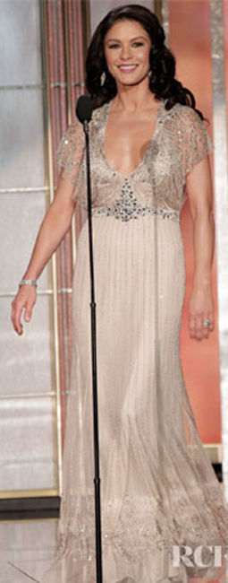
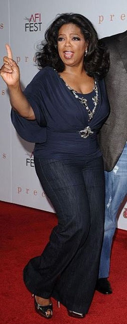
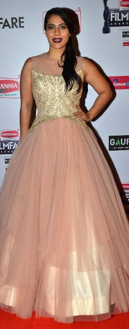
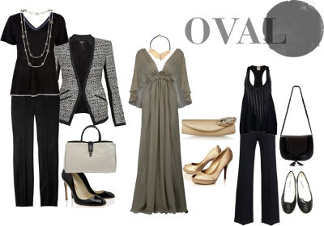

Your Body Doubles
- 
- 
- 
-

characteristics typical of an APPLE body shape
- You carry weight around your mid-section and chest (eg. big bust, protruding tummy)
- You may have wide or/and fleshy shoulders
- You probably have fabulous legs and bust(you may be well endowed)
- Your waistline is undefined or has little waist definition
- Your hips may be narrow (similar to Inverted Triangle, but your midsection is fuller/wider)
- Your waistline is undefined or has little waist definition
- You have slim limbs (specifically arms)
However, if you are small chested you most likely carry most of your weight around the midriff.
How/What to wear
Trim your waist
Wear clothes in a way that makes your mid-section narrower. This will help you achieve a proportional body shape and visually take 4-5kgs off your figure. Adding interest to your shoulders and neckline, along with adding volume to your hips help. Shapewear, especially waist cinchers will do the trick in an instant. A good push-up bra lifts up your bust.
You can experiment with various textures and details, but be careful with their placement on your body frame. Compared to solid colors - patterns and texture with a dark base are great for camouflaging. Keep your waist free from details that widen and highlight (eg. light colors, horizontal details, etc.).
Flaunt Your Best Assets
This helps draw attention away from the midsection and give the spotlight to your best parts, and in most Apple body shape cases that's your bust and/or legs. Details on the hemline to bring attention to your legs. Wear clothes that skim past over your midsection but nip right below your bust lift your chest and make your waist look trimmer.
- 
-